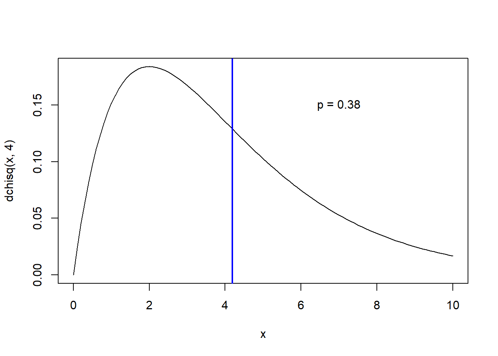

Chi-squared tests etc.
NRES 710
Fall 2020
Download the R code for this lecture!
To follow along with the R-based lessons and demos, right (or command) click on this link and save the script to your working directory
Overview: Chi-squared-tests
Chi-square goodness-of-fit test.
As you recall from the ‘basic concepts’ lecture, this test asks the question “do the observations sort into categories according to your (null) hypothesis?” In a Chi-square goodness-of-fit test, the response variable of interest is categorical. Like the one-sample t-test, there is no predictor variable.
Example: Are grad students more likely to be born some months versus other months?
In this example, the response variable of interest is the birth month- which is a categorical variable. You can run this test on non-categorical variables, but you have to turn your variable into a categorical variable prior to conducting this analysis.
Chi-square test for independence
In the chi-square test for independence, we are testing for a relationship between two categorical variables. That is, both your response variable and predictor variables are categorical. For example, we might test if rabbit ear type (floppy, pointy, mixed) is associated with rabbit coat color (white, brown, mixed) (e.g., are floppy eared rabbits more likely to be white than bunnies with pointy ears). You can run this test on non-categorical variables, but you have to turn your variables into a categorical variables prior to conducting this analysis.
Assumptions of Chi-squared tests
- Response variable (and predictor variable, for test for independence) must be categorical (data can be summarized as contingency table)
- Samples must be independent (this is almost always an assumption of our classical statistical tests)
- Samples must be representative of the population of interest (again, this is always a key assumption)
- There must be a sufficient sample size such that the expected number of observations in each element of the contingency table is at least 5!
The Chi-squared statistic is computed from the data. The sampling distribution for the statistic is called the Chi-squared distribution.
The Chi-squared statistic:
\(\chi^2 = \sum_{i=1}^k\frac{(x_i-exp_i)^2}{exp_i}\)
Here, \(exp_i\) is the expected number of observations in category i under the null hypothesis. \(x_i\) is the observed number in category i. So the Chi-squared statistic basically summarizes the degree to which the number of observations disagree with the expected number of observations across all categories.
Why is the numerator squared? First, this makes all deviations positive- negatives and positives can’t cancel each other out. Second, it allows us to use the well-described Chi-squared distribution!
The Chi-squared distribution
The Chi-squared distribution is described (like the t distribution) by a certain degrees of freedom (‘degrees of freedom’ is the parameter needed to describe the distribution – just like mean and standard deviation are parameters of the normal distribution).
If you are performing a goodness-of-fit test, the degrees of freedom for this test is one less than the number of categories.
If you are performing a test for independence of two categorical variables, the degrees of freedom is computed as \((r-1)(c-1)\) where r and c are the number of categories in each of the two categorical variables, respectively.
Examples in R
Chi squared goodness-of-fit example
## Chi squared goodness-of-fit example
birthdays.bymonth <- c(40,23,33,39,28,29,45,31,22,34,44,20)
months <- c("Jan","Feb","Mar","Apr","May","Jun","Jul","Aug","Sep","Oct","Nov","Dec")
names(birthdays.bymonth) <- months
sample.size <- sum(birthdays.bymonth)
k = length(birthdays.bymonth) # number of categories (months)
exp.birthdays.bymonth <- sample.size*rep(1/k,times=k) # compute the expected number under the null hypothesis.
Chisq.stat <- sum((birthdays.bymonth-exp.birthdays.bymonth)^2/exp.birthdays.bymonth)
Chisq.stat## [1] 24.14433## View the summary statistic along with its sampling distribution under the null hypothesis
curve(dchisq(x,k-1),0,75)
abline(v=Chisq.stat,col="green",lwd=3)
p <- 1-pchisq(Chisq.stat,k-1)
p## [1] 0.01213825### use R's built in chi squared function
chisq.test(birthdays.bymonth) # should get the same p value!##
## Chi-squared test for given probabilities
##
## data: birthdays.bymonth
## X-squared = 24.144, df = 11, p-value = 0.01214Chi squared test for independence example
Here we are testing if bunnies ear type is related to coat color.
n.bunnies <- 112
# sample assuming null hypothesis is true
all.bunnies <- data.frame(
ear_type = sample(c("floppy","pointy","mixed"),n.bunnies,replace = T),
coat_color = sample(c("white","brown","mixed"),n.bunnies,replace = T)
)
head(all.bunnies)## ear_type coat_color
## 1 floppy brown
## 2 mixed mixed
## 3 mixed white
## 4 pointy white
## 5 mixed mixed
## 6 floppy white######
# make contingency table
con_table <- table(all.bunnies$ear_type,all.bunnies$coat_color)
######
# generate expected values
prop.ears <- rowSums(con_table)/n.bunnies
sum.coats <- colSums(con_table)
exp_table <- sapply(1:ncol(con_table),function(t) sum.coats[t]*prop.ears)
colnames(exp_table) <- colnames(con_table)
#####
# compute chi-squared statistic
Chisq.stat <- sum((con_table-exp_table)^2/exp_table)
#####
# Compare chi squared statistic with null sampling distribution
curve(dchisq(x,4),0,10)
abline(v=Chisq.stat,col="blue",lwd=2)
p.value <- 1-pchisq(Chisq.stat,4)
p.value## [1] 0.3802384text(7,0.15,paste0("p = ",round(p.value,3)))
######
# Compare with R's built in chi squared function
chisq.test(con_table)##
## Pearson's Chi-squared test
##
## data: con_table
## X-squared = 4.1952, df = 4, p-value = 0.3802